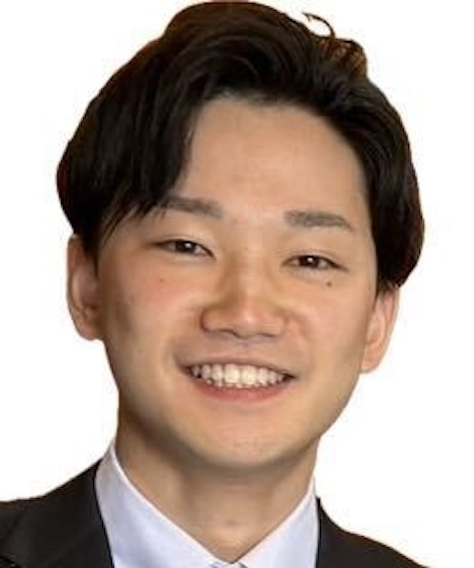

Team

Trishit Ruj
Principal Investigator

Ren Kito
PhD Student

Takaki Sako
Master's Student

Takumu Chijiiwa
Research Collaborator

Hiral PB
Visiting Researcher
Exploring planetary surface processes through geology, simulation & exploration
Led by Associate Professor Trishit Ruj at Okayama University's Institute for Planetary Materials, our lab investigates the evolution and habitability of planetary surfaces, with a focus on Mars and the Moon.
Our team works on Martian periglacial processes, brine stability, lunar tectonism, ancient fluvial geomorphology, and AI-driven terrain mapping. We combine lab experiments, field analogs, and remote sensing.
Principal Investigator
PhD Student
Master's Student
Research Collaborator
Visiting Researcher